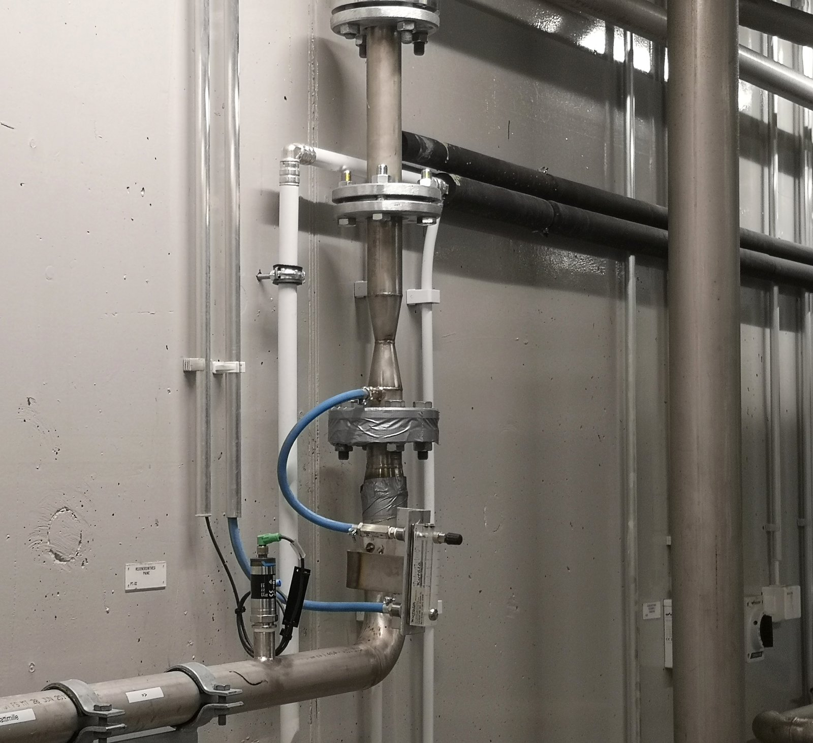

Hydrogen sulphide · networks, process water, lagoons
Corrosion, odour and a safety problem.
Hydrogen sulphide forms wherever oxygen runs out. SansOx either prevents the formation by raising dissolved oxygen, or removes dissolved sulphide in a controlled in-pipe reaction.
Three places it appears
Wastewater collection
Raise dissolved oxygen before odour complaints and concrete corrosion escalate into structural repair.
Industrial process water
Treat sulphide in a controlled pipeline step, with online monitoring rather than periodic sampling.
Reservoirs and lagoons
Improve oxygen conditions and reduce the effects of anoxia in the deep zone.
Why it costs more than it looks
Hydrogen sulphide is usually budgeted as an odour problem. The odour is the cheapest part of it.
The damage happens above the water
Sulphide leaves the water as gas and is oxidised to sulphuric acid on the damp surfaces above the flow. The acid does the work. That is why a sewer fails at the crown while the invert survives, and why the repair is capital work rather than maintenance.
Complaints arrive on someone else's schedule
Residents notice odour before the operator does, which makes it political as well as technical. A defensible response needs a record of what the network was doing at the time.
The warning disappears as the risk rises
It is detectable by smell at very low concentrations, but higher ones deaden the sense of smell: the warning fails exactly when it matters. In confined spaces that is a life-safety issue, not a nuisance.
General mechanism, stated here as background. It is standard wastewater engineering rather than a claim about this technology.
Two levers, and they are not interchangeable
Prevent the formation
Keep dissolved oxygen present so the depleted conditions never establish. Acts upstream, on the conditions, and is the cheaper lever where the geometry allows it.
Treat the sulphide already there
Where sulphide is already in solution, the in-pipe reaction is the lever. This acts at a chosen point rather than along the whole network.
The choice is a measurement, not a catalogue decision
pH governs whether sulphide stays dissolved or escapes as gas, and the load varies with retention time, temperature and sulphate. Which lever applies, and where, follows from measuring the system.

In-line installation in an existing process water line — no basin, no rebuild. The unit sits between flanges in the run that is already there.
Why in-pipe rather than surface aeration
Targeted delivery at depth
Gas goes where the problem is, not to the surface.
No rotating parts
No moving parts inside the OxTube unit in the water.
Under-ice capable
Suitable for under-ice operation when designed for the site.
What we have, and what we do not
A real-world H₂S trial exists — measured and reported by the customer, not by us. Finnish pulp and paper mill, wastewater treatment plant, 17 September 2021. Measured at two points (water leaving pre-clarification, and the equalisation-basin bypass channel). At the bypass channel: the H₂S shake test fell from over 100 ppm to 0 ppm in water pumped through the OxTube; dissolved oxygen rose from 0.15 to about 3 mg/L within minutes; redox potential moved from −370 mV to about −90 to −150 mV; and the FeS precipitate present in the water broke down (soluble iron rose from about 1 to 8 mg/L). The mill's own summary: OxTube oxygenated the water pumped through the tube effectively at both points, and H₂S release stopped in the oxygenated water. The mill is not named here pending its permission.

HUNOSA pilot, Polio Well, Mieres (Asturias), 9 December 2025. OxTube DN20 on well water.
A Spanish pilot exists too — and its H₂S result is honestly inconclusive. HUNOSA, Polio Well, Mieres (Asturias), 9 December 2025: OxTube DN20 on well water raised dissolved oxygen from 0.98 to about 2.84 mg/L in roughly two hours. H₂S removal could not be verified — strong wind (11–17 m/s) and an adjacent overflow pipe distorted the gas measurement. The recommendation for the next stage: two OxTube units and continuous DO/H₂S/pH/ORP measurement. [Name published in this draft only — permission to name HUNOSA publicly is still being confirmed.]
Documentation that does exist is listed on the pilot page.
Measure first, dose second.
The pilot establishes what the network actually needs before any equipment is sized.
Define a pilot